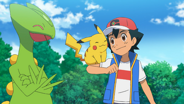
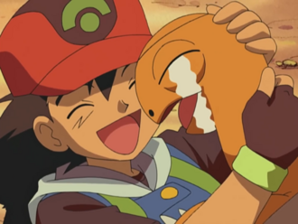

Ash's Pokemon In Hoenn
Ash Ketchum is in possession of a fairly large number of pokemon. Over his career He has had about 102 different species under his care. This website will list several pokemon which he acquired over his journey through pokemons many regions.
Sceptile
Sceptile is the Forest Pokemon. It is a grass type pokemon. It is the second pokemon Ash catches in the Hoenn region. It was caught when it was still a Treecko in the Petalburg Woods. It has often displayed a cool, calm, and aloof demeanor since it was a Treeko. It also appears to prefer secluding itself than being grouped with others.

Torkoal
Torkoal is the Coal Pokemon. It is a fire type. It is the fourth pokemon Ash caught in the Hoenn region. It was caught in the Valley of Steel. Ash caught it after dispersing the steel type pokemon that had been tormenting it. It is known to be quite emotional and friendly.
